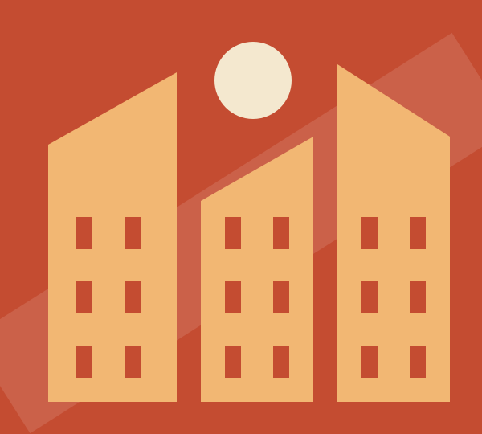

O olhar desta edição01 — 06
Cultura / Ensaio visual
A cidade também se lê nas margens.
Há uma cidade que não cabe nos postais. Encontrámo-la nos ateliers, nas livrarias e nas conversas de quem a transforma todos os dias.
Ler a história ↗
PORTO, ENTRE LINHAS — 2026O que nos move
Em perspetiva↘
Novas ideias.
Outras formas de ver.
Ainda não encontrámos essa história.
Experimente outra palavra ou explore todas as categorias.